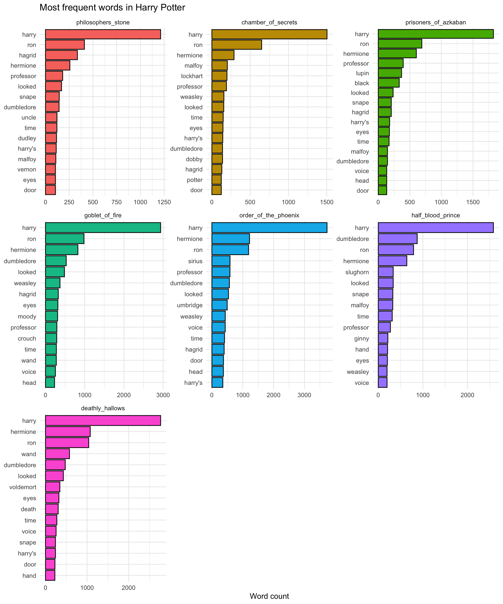

library(tidyverse)
library(tidytext)
library(harrypotter)
library(dplyr) # this package is part of the tidyverse
library(tibble)
theme_set(theme_minimal())Notes
Script to fetch textual data from x source
install.packages(c("tidyverse", "tidytext", "devtools"))Get Harry Potter files
devtools::install_github("bradleyboehmke/harrypotter")Exploring the Harry Potter Library
- Import the libraries
- Get full text of one book
Each book is represented as a character vector where each element corresponds to a chapter
bookvar <- philosophers_stone
substr(bookvar[1], 1, 50)[1] "THE BOY WHO LIVED Mr. and Mrs. Dursley, of number"- Count the number of chapters
sprintf("%d chapters", length(bookvar))[1] "17 chapters"Prepare the Corpus
- Create an object to store the books
hp_books <- c(
"philosophers_stone",
"chamber_of_secrets",
"prisoners_of_azkaban",
"goblet_of_fire",
"order_of_the_phoenix",
"half_blood_prince",
"deathly_hallows" )
hp_books[1] "philosophers_stone" "chamber_of_secrets" "prisoners_of_azkaban"
[4] "goblet_of_fire" "order_of_the_phoenix" "half_blood_prince"
[7] "deathly_hallows" - Combine the book objects into a list
Note to myself. Don’t print the hp_words object until convert it to a data frame
hp_words <- list(
philosophers_stone,
chamber_of_secrets,
prisoner_of_azkaban,
goblet_of_fire,
order_of_the_phoenix,
half_blood_prince,
deathly_hallows
) %>%
# name each list element
set_names(hp_books) %>%
# convert each book to a tibble data frame and merge into a big tibble using map_df() using "book" as column name.
map_df(as_tibble, .id = "book") %>%
# convert book to a factor (categorical variable, sort in the orden given by hp_books)
mutate(book = factor(book, levels = hp_books)) %>%
# remove empty chapters. Just for safety
drop_na(value) %>%
# create a chapter id column
group_by(book) %>%
mutate(chapter = row_number(book)) %>%
ungroup() %>%
# tokenize the data frame
unnest_tokens(word, value)
hp_words# A tibble: 1,089,386 × 3
book chapter word
<fct> <int> <chr>
1 philosophers_stone 1 the
2 philosophers_stone 1 boy
3 philosophers_stone 1 who
4 philosophers_stone 1 lived
5 philosophers_stone 1 mr
6 philosophers_stone 1 and
7 philosophers_stone 1 mrs
8 philosophers_stone 1 dursley
9 philosophers_stone 1 of
10 philosophers_stone 1 number
# ℹ 1,089,376 more rowsExplore the books
Count words per book (including stop words)
all_words <- hp_words %>%
# count unique words per book
group_by(book) %>%
summarise(total_words = n()) %>%
mutate(book = factor(book, levels = hp_books))
all_words %>%
# Create barplot
ggplot(aes(x = book, y = total_words, fill = book)) +
geom_col(color = "black") +
geom_text(aes(label = total_words), vjust=1.5) +
scale_x_reordered() +
labs(
title = "Number of Words per Book",
x = NULL,
y = "Word Count"
) +
theme(
legend.position = "none"
)
Count unique words per book (No stopwords)
no_stopwords <- hp_words %>%
# delete stopwords
anti_join(stop_words)Joining with `by = join_by(word)`unique_per_book <- no_stopwords %>%
# count unique words per book
group_by(book) %>%
summarise(unique_count = n_distinct(word)) %>%
mutate(book = factor(book, levels = hp_books)) %>%
# Create barplot
ggplot(aes(x = book, y = unique_count, fill = book)) +
geom_col(color = "black") +
geom_text(aes(label = unique_count), vjust=1.5) +
scale_x_reordered() +
labs(
title = "Number of Unique Words per Book (No stopwords)",
x = NULL,
y = "Word Count"
) +
theme(
legend.position = "none"
)
unique_per_book
Lexical Density
Lexical density is the calculation of the unique number of words divided by the sum of words in a text. The ratio is represented in a percentage of how varied the words are in the text. The formula to calculate the lexical density is:
\[ L_d = (N_{lex}/N) \times 100 \]
lexical_density <- no_stopwords %>%
# count unique words per book
group_by(book) %>%
summarise(
total_words = n(),
unique_words = n_distinct(word),
vocab_density = (unique_words / total_words) * 100
) %>%
dplyr::mutate_if(is.numeric, round, 2) %>%
mutate(book = factor(book, levels = hp_books))
lexical_density# A tibble: 7 × 4
book total_words unique_words vocab_density
<fct> <dbl> <dbl> <dbl>
1 philosophers_stone 28585 5421 19.0
2 chamber_of_secrets 33621 6687 19.9
3 prisoners_of_azkaban 41188 7087 17.2
4 goblet_of_fire 72663 9919 13.6
5 order_of_the_phoenix 96777 12187 12.6
6 half_blood_prince 63098 10823 17.2
7 deathly_hallows 73406 11527 15.7And the plot
lexical_density %>%
ggplot(aes(x = book, y = vocab_density, group = 1)) +
geom_line(color = "steelblue", linewidth = 2) +
geom_point(size = 3, color = "black", fill = "white", shape = 21) +
geom_text(aes(label = paste("LD: ",vocab_density," n: ",total_words)), hjust=1.5) +
labs(
title = "Lexical Density Accross Harry Potter Book Series",
x = NULL,
y = "Lexical density"
) +
theme_minimal()
Lexical density tends to decrease as the books increase in length, reflecting a general trend toward more repetitive or uniform language in the longer volumes. However, this relationship is not strictly linear. Notably, Chamber of Secrets exhibits the highest lexical density, even though it is not the shortest book. Similarly, the final two books—Half-Blood Prince and Deathly Hallows—show a modest rebound in density, approaching the levels of Prisoner of Azkaban, despite their substantially greater length. These deviations suggest that factors beyond length—such as narrative complexity or character focus—may influence lexical variety across the series.
This negative correlation can be visualized using a scatterplot with a regression line (gray is the confidence interval).
model <- lm(vocab_density ~ total_words, data = lexical_density)
slope <- coef(model)[2]
intercept <- coef(model)[1]
r2 <- summary(model)$r.squared
ggplot(lexical_density, aes(x = total_words, y = vocab_density)) +
geom_point(size = 2, shape = 23) +
geom_smooth(method = lm, se = FALSE, color = "steelblue") +
geom_text(aes(label = book), vjust = 1.5) +
annotate("text", x = 3000, y = 19, hjust = 0,
label = paste0("y = ", round(slope, 4), "x + ", round(intercept, 2),
"\nR² = ", round(r2, 4))) +
labs(
title = "Correlation Between Lexical Density and Number of Words",
x = "Number of Words",
y = "Lexical Density"
) +
theme_minimal()`geom_smooth()` using formula = 'y ~ x'
What this is basically saying is that for every additional 1,000 words in a book, the lexical density decreases by about 0.1 (since -0.0001 × 1000 = -0.1).
R² = 0.8615 This means that 86.15% of the variation in lexical density can be explained by the variation in total word count.
That’s a very strong correlation for such a small sample size (n = 7 books), suggesting a clear and consistent downward trend.
Would lexical complexity from harry potter is lower that in classical literature?
Jane Austen, Pride and Prejudice (1813): https://www.gutenberg.org/ebooks/1342.txt.utf-8 Charles Dickens, A Tale of Two Cities (1859): https://www.gutenberg.org/ebooks/98.txt.utf-8 F. Scott Fitzgerald, The Great Gatsby (1925): https://www.gutenberg.org/ebooks/64317.txt.utf-8 Mary Wollstonecraft Shelley, Frankenstein; Or, The Modern Prometheus (1818): https://www.gutenberg.org/ebooks/84.txt.utf-8 Herman Melville, Moby Dick (1851): https://www.gutenberg.org/ebooks/2701.txt.utf-8 Louisa May Alcott, Little Women (1868): https://www.gutenberg.org/ebooks/37106.txt.utf-8 Mark Twain, The Adventures of Tom Sawyer (1876): https://www.gutenberg.org/ebooks/74.txt.utf-8 Jonathan Swift, Gulliver’s Travels (1726): https://www.gutenberg.org/ebooks/17157.txt.utf-8 E. M. Forster, A Room with a View (1908): https://www.gutenberg.org/ebooks/2641.txt.utf-8 Elizabeth Von Arnim, The Enchanted April (1922): https://www.gutenberg.org/ebooks/16389.txt.utf-8 Lewis Carroll, Alice’s Adventures in Wonderland (1865) : https://www.gutenberg.org/ebooks/11.txt.utf-8 George Eliot, Middlemarch (1871): https://www.gutenberg.org/ebooks/145.txt.utf-8 Elizabeth Cleghorn Gaskell, Cranford (1853): https://www.gutenberg.org/ebooks/394.txt.utf-8 Robert Louis Stevenson,The Strange Case of Dr. Jekyll and Mr. Hyde (1886): https://www.gutenberg.org/ebooks/43.txt.utf-8
books_meta <- tribble(
~author, ~title, ~year, ~url,
"Jane Austen", "Pride and Prejudice", 1813, "https://www.gutenberg.org/ebooks/1342.txt.utf-8",
"Charles Dickens", "A Tale of Two Cities", 1859, "https://www.gutenberg.org/ebooks/98.txt.utf-8",
"F. Scott Fitzgerald", "The Great Gatsby", 1925, "https://www.gutenberg.org/ebooks/64317.txt.utf-8",
"Mary Wollstonecraft Shelley", "Frankenstein; Or, The Modern Prometheus", 1818, "https://www.gutenberg.org/ebooks/84.txt.utf-8",
"Herman Melville", "Moby Dick", 1851, "https://www.gutenberg.org/ebooks/2701.txt.utf-8",
"Louisa May Alcott", "Little Women", 1868, "https://www.gutenberg.org/ebooks/37106.txt.utf-8",
"Mark Twain", "Tom Sawyer", 1876, "https://www.gutenberg.org/ebooks/74.txt.utf-8",
"Jonathan Swift", "Gulliver's Travels", 1726, "https://www.gutenberg.org/ebooks/17157.txt.utf-8",
"E. M. Forster", "A Room with a View", 1908, "https://www.gutenberg.org/ebooks/2641.txt.utf-8",
"Elizabeth Von Arnim", "The Enchanted April", 1922, "https://www.gutenberg.org/ebooks/16389.txt.utf-8",
"Lewis Carroll", "Alice's Adventures in Wonderland", 1865, "https://www.gutenberg.org/ebooks/11.txt.utf-8",
"George Eliot", "Middlemarch", 1871, "https://www.gutenberg.org/ebooks/145.txt.utf-8",
"Elizabeth Gaskell", "Cranford", 1853, "https://www.gutenberg.org/ebooks/394.txt.utf-8",
"R. L. Stevenson", "Dr. Jekyll and Mr. Hyde", 1886, "https://www.gutenberg.org/ebooks/43.txt.utf-8"
)
books_meta# A tibble: 14 × 4
author title year url
<chr> <chr> <dbl> <chr>
1 Jane Austen Pride and Prejudice 1813 http…
2 Charles Dickens A Tale of Two Cities 1859 http…
3 F. Scott Fitzgerald The Great Gatsby 1925 http…
4 Mary Wollstonecraft Shelley Frankenstein; Or, The Modern Prometh… 1818 http…
5 Herman Melville Moby Dick 1851 http…
6 Louisa May Alcott Little Women 1868 http…
7 Mark Twain Tom Sawyer 1876 http…
8 Jonathan Swift Gulliver's Travels 1726 http…
9 E. M. Forster A Room with a View 1908 http…
10 Elizabeth Von Arnim The Enchanted April 1922 http…
11 Lewis Carroll Alice's Adventures in Wonderland 1865 http…
12 George Eliot Middlemarch 1871 http…
13 Elizabeth Gaskell Cranford 1853 http…
14 R. L. Stevenson Dr. Jekyll and Mr. Hyde 1886 http…Frequency calculation
- Without removing stopwords
hp_words %>%
# count per word per book
count(book, word, sort=TRUE) %>%
# top 15
group_by(book) %>%
slice_max(order_by = n, n = 15) %>%
mutate(word = reorder_within(word, n, book)) %>%
# create barplot
ggplot(aes(x = word, y = n, fill = book)) +
geom_col(color = "black") +
scale_x_reordered() +
labs(
title = "Most frequent words in Harry Potter (no stop words)",
x = NULL,
y = "Word Count"
) +
facet_wrap(facets = vars(book), scales = "free") +
coord_flip() +
theme(
legend.position = "none",
strip.text = element_text(face = "bold", size = 10),
axis.text.y = element_text(size = 8, margin = margin(r = 6))
)- Removing stopwords
hp_words %>%
# delete stopwords
anti_join(stop_words) %>%
# count per word per book
count(book, word, sort=TRUE) %>%
# top 15
group_by(book) %>%
slice_max(order_by = n, n = 15) %>%
mutate(word = reorder_within(word, n, book)) %>%
# create barplot
ggplot(aes(x = word, y = n, fill = book)) +
geom_col(color = "black") +
scale_x_reordered() +
labs(
title = "Most frequent words in Harry Potter",
x = NULL,
y = "Word count"
) +
facet_wrap(facets = vars(book), scales = "free") +
coord_flip() +
theme(
legend.position = "none",
)Joining with `by = join_by(word)`
TF-IDF (Term Frequency-Inverse Document Frequency)
- Find terms that are unique or characteristic per book:
hp_words %>%
# delete stopwords
anti_join(stop_words) %>%
# count per word per book
count(book, word, sort=TRUE) %>%
# tf-idf
bind_tf_idf(word, book, n) %>%
# top 15
group_by(book) %>%
slice_max(order_by = tf_idf, n = 15) %>%
mutate(word = reorder_within(word, n, book)) %>%
# create barplot
ggplot(aes(x = word, y = tf_idf, fill = book)) +
geom_col(color = "black") +
scale_x_reordered() +
labs(
title = "TF-IDF in Harry Potter",
x = NULL,
y = "TF-IDF"
) +
facet_wrap(facets = vars(book), scales = "free") +
coord_flip() +
theme(
legend.position = "none",
)Joining with `by = join_by(word)`